3. The Basics of Web Development in Java
We will now discuss the development of dynamic web applications, i.e., applications in which the HTML pages sent to the user are generated by programs.
3.1. Creating a Web Project in Eclipse
We will develop our first web application using Eclipse/Tomcat. We will follow a process similar to the one used to create a web application without Eclipse. With Eclipse running, we create a new project:

which we define as a dynamic web project:

On the first page of the creation wizard, we specify the project name [1] and its location [2]:

On the second page of the wizard, we accept the default values:

The last page of the wizard asks us to define the application context [3]:

Once the wizard is confirmed by clicking [Finish], Eclipse connects to the site [http://java.sun.com] to retrieve certain documents it wants to cache in order to avoid unnecessary network traffic. A license agreement is then requested:

We accept it. Eclipse creates the web project. To display it, it uses an environment, called a perspective, that is different from the one used for a traditional Java project:
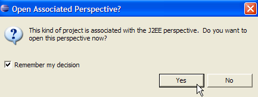
The perspective associated with a web project is the J2EE perspective. We accept it to see... The result is as follows:

The J2EE perspective is actually unnecessarily complex for simple web projects. In this case, the Java perspective is sufficient. To open it, we use the option [Window -> Open perspective -> Java]:

src: will contain the Java code for the application’s classes as well as the files that must be in the application’s classpath.
build/classes (not shown): will contain the .class files of the compiled classes as well as a copy of all non-.java files located in src. A web application frequently uses so-called "resource" files that must be in the application's classpath, i.e., the set of directories that the JVM searches when the application references a class, either during compilation or at runtime. Eclipse ensures that the build/classes directory is part of the web classpath. "Resource" files are placed in the src folder, knowing that Eclipse will automatically copy them to build/classes.
WebContent: will contain the web application resources that do not need to be in the application's Classpath.
WEB-INF/lib: contains the .jar files required by the web application.
Let’s examine the contents of the [WEB-INF/web.xml] file that configures the [person] application:
<?xml version="1.0" encoding="UTF-8"?>
<web-app id="WebApp_ID" version="2.4" xmlns="http://java.sun.com/xml/ns/j2ee" xmlns:xsi="http://www.w3.org/2001/XMLSchema-instance" xsi:schemaLocation="http://java.sun.com/xml/ns/j2ee http://java.sun.com/xml/ns/j2ee/web-app_2_4.xsd">
<display-name> person</display-name>
<welcome-file-list>
<welcome-file>index.html</welcome-file>
<welcome-file>index.htm</welcome-file>
<welcome-file>index.jsp</welcome-file>
<welcome-file>default.html</welcome-file>
<welcome-file>default.htm</welcome-file>
<welcome-file>default.jsp</welcome-file>
</welcome-file-list>
</web-app>
We have already encountered this type of configuration when we studied the creation of welcome pages in Section 2.3.4. This file does nothing more than define a series of welcome pages. We keep only the first one. The [web.xml] file becomes the following:
<?xml version="1.0" encoding="UTF-8"?>
<web-app id="WebApp_ID" version="2.4"
xmlns="http://java.sun.com/xml/ns/j2ee"
xmlns:xsi="http://www.w3.org/2001/XMLSchema-instance"
xsi:schemaLocation="http://java.sun.com/xml/ns/j2ee http://java.sun.com/xml/ns/j2ee/web-app_2_4.xsd">
<display-name>person</display-name>
<welcome-file-list>
<welcome-file>index.html</welcome-file>
</welcome-file-list>
</web-app>
The content of the XML file above must comply with the syntax rules defined in the file specified by the [xsi:schemaLocation] attribute of the opening <web-app> tag. That file is located at [http://java.sun.com/xml/ns/j2ee/web-app_2_4.xsd]. This is an XML file that can be accessed directly using a web browser. If the browser is recent enough, it will be able to display an XML file:

Eclipse will attempt to validate the XML document using the .xsd file specified in the [xsi:schemaLocation] attribute of the opening <web-app> tag. To do this, it will make a network request. If your computer is on a private network, you must tell Eclipse which machine to use to exit the private network, known as an HTTP proxy. This is done via the [Window -> Preferences -> Internet] option:

Check the box (1) if you are on a private network. In (2), enter the name of the machine that hosts the HTTP proxy, and in (3), its listening port. Finally, in (4), specify the machines that should bypass the proxy—machines that are on the same private network as the machine you are working on.
We will now create the [index.html] file for the home page.
3.2. Creating a Home Page
Right-click on the [WebContent] folder and select [New -> Other]:

We select the [HTML] type and click [Next] ->

Above, select the parent folder [WebContent] in (1) or (2), then specify the name of the file to create in (3). Once this is done, proceed to the next page of the wizard:

With (1), we can generate an HTML file pre-filled with (2). If we uncheck (1), we generate an empty HTML file. We leave (1) checked to benefit from a code template. We complete the wizard by clicking [Finish]. The [index.html] file is then created:

with the following content:
<!DOCTYPE HTML PUBLIC "-//W3C//DTD HTML 4.01 Transitional//EN">
<html>
<head>
<meta http-equiv="Content-Type" content="text/html; charset=ISO-8859-1">
<title>Insert title here</title>
</head>
<body>
</body>
</html>
We modify this file as follows:
<!DOCTYPE HTML PUBLIC "-//W3C//DTD HTML 4.01 Transitional//EN">
<html>
<head>
<meta http-equiv="Content-Type" content="text/html; charset=ISO-8859-1">
<title>Application person</title>
</head>
<body>
Person application active...
<br>
<br>
You are on the home page
</body>
</html>
3.3. Testing the home page
If it is not present, display the [Servers] view using the option [Window -> Show View -> Other -> Servers], then right-click on the Tomcat 5.5 server:

The [Add and Remove Objects] option above allows you to add or remove web applications from the Tomcat server:

Eclipse's known web projects are listed in (1). You can register them with the Tomcat server using (2). Web applications registered with the Tomcat server appear in (4). You can unregister them using (3). Let's register the [person] project:

then complete the registration wizard by clicking [Finish]. The [Servers] view shows that the [person] project has been registered on Tomcat:

Now, let’s start the Tomcat server:
 |  |
Launch the web browser:

then enter the URL [http://localhost:8080/personne]. This URL is the root of the web application. No document is requested. In this case, the application’s home page is displayed. If it does not exist, an error is reported. Here, the home page exists. It is the [index.html] file we created earlier. The result is as follows:

It matches what was expected. Now, let’s use a browser outside of Eclipse and request the same URL:

The [person] web application is therefore also accessible outside of Eclipse.
3.4. Creating an HTML Form
We will now create a static HTML document [form.html] in the [person] folder:

To create it, follow the procedure described in section 3.2, page 33. Its content will be as follows:
<!DOCTYPE HTML PUBLIC "-//W3C//DTD HTML 4.01 Transitional//EN">
<html>
<head>
<title>Person - form</title>
</head>
<body>
<center>
<h2>Person - form</h2>
<hr>
<form action="" method="post">
<table>
<tr>
<td>Name</td>
<td><input name="txtName" value="" type="text" size="20"></td>
</tr>
<tr>
<td>Age</td>
<td><input name="txtAge" value="" type="text" size="3"></td>
</tr>
</table>
<table>
<tr>
<td><input type="submit" value="Submit"></td>
<td><input type="reset" value="Reset"></td>
<td><input type="button" value="Clear"></td>
</tr>
</table>
</form>
</center>
</body>
</html>
The HTML code above corresponds to the form below:
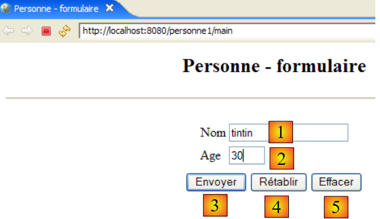
HTML type | name | HTML code | role | |
<input type="text"> | txtName | line 14 | enter name | |
<input type="text"> | txtAge | line 18 | age input | |
<input type="submit"> | line 23 | Send the entered values to the server at the URL /person1/main | ||
<input type="reset"> | line 24 | to restore the page to the state in which it was initially received by the browser | ||
<input type="button"> | line 25 | to clear the contents of input fields [1] and [2] |
Let's save the document to the <person>/WebContent folder. Start Tomcat if necessary. Using a browser, navigate to the URL http://localhost:8080/personne/formulaire.html:

The client/server architecture of this basic application is as follows:

The web server sits between the user and the web application and has not been depicted here. [formulaire.html] is a static document that returns the same content for every client request. Web programming aims to generate content tailored to the client’s request. This content is then generated programmatically. One solution is to use a JSP (Java Server Page) instead of the static HTML file. That is what we will now examine.
3.5. Creating a JSP Page
Readings [ref1]: Chapter 1, Chapter 2: 2.2, 2.2.1, 2.2.2, 2.2.3, 2.2.4
The previous client/server architecture is transformed as follows:
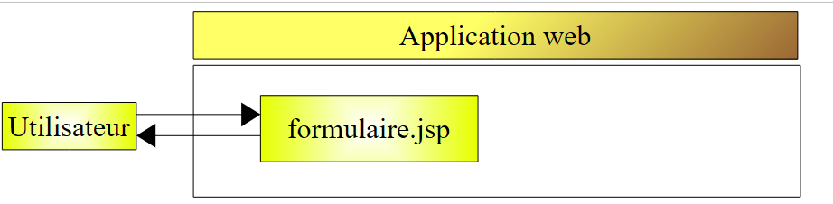
A JSP page is a type of parameterized HTML page. Certain elements of the page only receive their values at runtime. These values are calculated by the program. We therefore have a dynamic page: successive requests to the page may yield different responses. Here, we refer to the HTML page displayed by the client browser as the response. Ultimately, the browser always receives an HTML document. This HTML document is generated by the web server from the JSP page, which serves as a template. Its dynamic elements are replaced by their actual values at the time the HTML document is generated.
To create a JSP page, right-click on the [WebContent] folder and select [New -> Other]:

We select the [JSP] type and click [Next] ->

Above, we select the parent folder [WebContent] in (1) or (2), then specify in (3) the name of the file to be created. Once this is done, we move on to the next page of the wizard:

With (1), we can generate a JSP file pre-filled with (2). If we uncheck (1), we generate an empty JSP file. We leave (1) checked to benefit from a code template. We complete the wizard by clicking [Finish]. The [formulaire.jsp] file is then created:

with the following content:
<%@ page language="java" contentType="text/html; charset=ISO-8859-1" pageEncoding="ISO-8859-1"%>
<!DOCTYPE HTML PUBLIC "-//W3C//DTD HTML 4.01 Transitional//EN">
<html>
<head>
<meta http-equiv="Content-Type" content="text/html; charset=ISO-8859-1">
<title>Insert title here</title>
</head>
<body>
</body>
</html>
Line 1 indicates that we are dealing with a JSP page. We transform the text above as follows:
<%@ page language="java" contentType="text/html; charset=ISO-8859-1"
pageEncoding="ISO-8859-1"%>
<!DOCTYPE HTML PUBLIC "-//W3C//DTD HTML 4.01 Transitional//EN">
<%
// retrieve the parameters
String name = request.getParameter("txtName");
if(name==null) name="unknown";
String age = request.getParameter("txtAge");
if(age==null) age="xxx";
%>
<html>
<head>
<meta http-equiv="Content-Type" content="text/html; charset=ISO-8859-1">
<title>Person - form</title>
</head>
<body>
<center>
<h2>Person - form</h2>
<hr>
<form action="" method="post">
<table>
<tr>
<td>Name</td>
<td><input name="txtName" value="<%= name %>" type="text" size="20"></td>
</tr>
<tr>
<td>Age</td>
<td><input name="txtAge" value="<%= age %>" type="text" size="3"></td>
</tr>
</table>
<table>
<tr>
<td><input type="submit" value="Submit"></td>
<td><input type="reset" value="Reset"></td>
<td><input type="button" value="Clear"></td>
</tr>
</table>
</form>
</center>
</body>
</html>
The initially static document has now become dynamic through the introduction of Java code. For this type of document, we will always proceed as follows:
- We place Java code at the beginning of the document to retrieve the parameters needed for the document to display. These will often be found in the `request` object. This object represents the client’s request. It may have passed through several servlets and JSP pages that may have enriched it. Here, it will come directly from the browser.
- The HTML code follows. It will usually simply display variables previously calculated in the Java code using <%= variable %> tags. Note here that the = sign is right next to the % sign. This is a common cause of errors.
What does the previous dynamic document do?
- Lines 6–9: It retrieves two parameters from the request, named [txtNom] and [txtAge], and assigns their values to the variables [nom] (line 6) and [age] (line 8). If it does not find the parameters, it assigns default values to the associated variables.
- It displays the values of the two variables [name, age] in the following HTML code (lines 25 and 29).
Let’s run an initial test. Start Tomcat if necessary, then use a browser to request the URL http://localhost:8080/personne/formulaire.jsp:

The form.jsp document was called without passing any parameters. The default values were therefore displayed. Now let’s request the URL http://localhost:8080/personne/formulaire.jsp?txtNom=martin&txtAge=14:

This time, we passed the parameters txtNom and txtAge to the form.jsp page, which is what it expects. It then displayed them. We know there are two methods for passing parameters to a web page: GET and POST. In both cases, the passed parameters are stored in the predefined request object. Here, they were passed using the GET method.
3.6. Creating a servlet
Readings [ref1]: Chapter 1, Chapter 2: 2.1, 2.1.1, 2.1.2, 2.3.1
In the previous version, the client’s request was handled by a JSP page. Upon the first call to this page, the web server—in this case, Tomcat—creates a Java class from the page and compiles it. It is the result of this compilation that ultimately processes the client’s request. The class generated from the JSP page is a servlet because it implements the [javax.Servlet] interface:

The client request can be handled by any class that implements this interface. We will now build such a class: ServletFormulaire. The previous client/server architecture is transformed as follows:
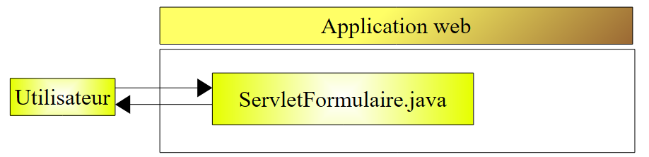
With the JSP-based architecture, the HTML document sent to the client was generated by the web server from the JSP page that served as a template. Here, the HTML document sent to the client will be entirely generated by the servlet.
3.6.1. Creating the servlet
In Eclipse, right-click on the [src] folder and select the option to create a class:

then define the characteristics of the class to be created:

In (1), enter a package name; in (2), enter the name of the class to be created. This class must extend the class specified in (3). There is no need to type the full name of the class yourself. The button (4) provides access to the classes currently in the web application’s classpath:
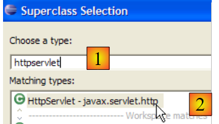
In (1), type the name of the class you are looking for. In (2), you will see the classes in the Classpath whose names contain the string typed in (1).
After confirming the creation wizard, the [person] web project is modified as follows:

The [ServletFormulaire] class has been created with a code skeleton:

The screenshot above shows that Eclipse displays a [warning] on the line declaring the class. Click the icon (lightbulb) indicating this [warning]:

After clicking on (1), solutions to remove the [warning] are suggested in (2). Selecting one of them causes the code change resulting from that choice to appear in (3).
Java 1.5 introduced changes to the Java language, and what was correct in a previous version may now trigger [warnings]. These do not indicate errors that would prevent the class from compiling. They are there to draw the developer’s attention to areas of code that could be improved. The current [warning] indicates that a class should have a version number. This is used for the serialization/deserialization of objects, i.e., when a Java .class object in memory must be converted into a sequence of bits sent sequentially in a write stream, or the reverse when a Java .class object in memory must be created from a sequence of bits read sequentially in a read stream. All of this is far removed from our current concerns. So we will ask the compiler to ignore this warning by choosing the [Add @SuppressWarnings ...] option. The code then becomes the following:

There are no more [warnings]. The added line is called an "annotation," a concept introduced in Java 1.5. We will complete this code later.
3.6.2. Classpath of an Eclipse Project
The classpath of a Java application is the set of folders and .jar files searched when the compiler compiles it or when the JVM executes it. These two classpaths are not necessarily identical, as some classes are only needed at runtime and not during compilation. Both the Java compiler and the JVM have an argument that allows you to specify the classpath of the application to be compiled or executed. In a way that is more or less transparent to the user, Eclipse handles the construction and passing of this argument to the JVM.
How can you determine the elements of an Eclipse project’s classpath? Using the [<project> / Build Path / Configure Build Path] option:
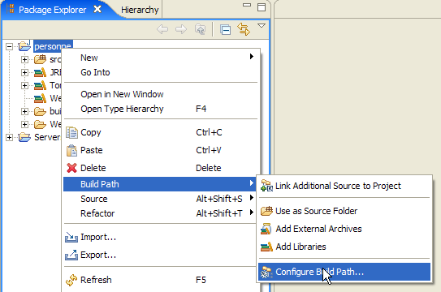
This brings up the following configuration wizard:

The (1) [Libraries] tab allows you to define the list of .jar files that are part of the application’s classpath. These are therefore searched by the JVM when the application requests a class. Buttons [2] and [3] allow you to add archives to the Classpath. Button [2] lets you select archives located in the folders of projects managed by Eclipse, while button [3] lets you select any archive from the computer’s file system.
Above, three libraries appear:
- [JRE System Library]: the base library for Eclipse Java projects:

- [Tomcat v5.5 runtime]: a library provided by the Tomcat server. It contains the classes necessary for web development. This library is included in any Eclipse web project that has been associated with the Tomcat server.
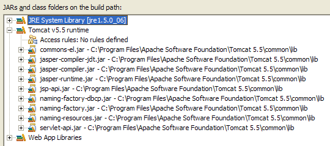
It is the [servlet-api.jar] archive that contains the [javax.servlet.http.HttpServlet] class, the parent class of the [ServletFormulaire] class we are currently creating. It is because this archive is in the application’s Classpath that it could be suggested as a parent class in the wizard shown below.
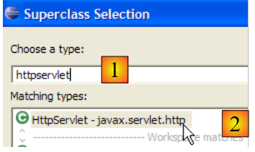
If this had not been the case, it would not have appeared in the suggestions in [2]. Therefore, if in this wizard you want to reference a parent class and it is not suggested, it means either that you have misspelled the class name, or that the archive containing it is not in the application’s classpath.
- [Web App Libraries] contains the archives located in the project's [WEB-INF/lib] folder. Here, it is empty:
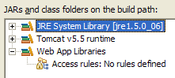
The archives in the Eclipse project's classpath are visible in the Project Explorer. For example, for the [person] web project:

The project explorer gives us access to the contents of these archives:

As shown above, we can see that the [servlet-api.jar] archive contains the [javax.servlet.http.HttpServlet] class.
3.6.3. Servlet configuration
Readings [ref1]: Chapter 2: 2.3, 2.3.1, 2.3.2, 2.3.3, 2.3.4
The [WEB-INF/web.xml] file is used to configure the web application:

For the [person] project, this file currently looks like this (see page 32):
<?xml version="1.0" encoding="UTF-8"?>
<web-app id="WebApp_ID" version="2.4"
xmlns="http://java.sun.com/xml/ns/j2ee"
xmlns:xsi="http://www.w3.org/2001/XMLSchema-instance"
xsi:schemaLocation="http://java.sun.com/xml/ns/j2ee http://java.sun.com/xml/ns/j2ee/web-app_2_4.xsd">
<display-name>person</display-name>
<welcome-file-list>
<welcome-file>index.html</welcome-file>
</welcome-file-list>
</web-app>
It only indicates the existence of a welcome file (line 8). We modify it to declare:
- the existence of the [ServletFormulaire] servlet
- the URLs handled by this servlet
- the servlet's initialization parameters
The web.xml file for our application will be as follows:
<?xml version="1.0" encoding="UTF-8"?>
<web-app id="WebApp_ID" version="2.4"
xmlns="http://java.sun.com/xml/ns/j2ee"
xmlns:xsi="http://www.w3.org/2001/XMLSchema-instance"
xsi:schemaLocation="http://java.sun.com/xml/ns/j2ee http://java.sun.com/xml/ns/j2ee/web-app_2_4.xsd">
<display-name>person</display-name>
<servlet>
<servlet-name>personform</servlet-name>
<servlet-class>
istia.st.servlets.person.ServletForm
</servlet-class>
<init-param>
<param-name>defaultName</param-name>
<param-value>unknown</param-value>
</init-param>
<init-param>
<param-name>defaultAge</param-name>
<param-value>XXX</param-value>
</init-param>
</servlet>
<servlet-mapping>
<servlet-name>personform</servlet-name>
<url-pattern>/form</url-pattern>
</servlet-mapping>
<welcome-file-list>
<welcome-file>index.html</welcome-file>
</welcome-file-list>
</web-app>
The main points of this configuration file are as follows:
- Lines 7–24 are related to the presence of the [ServletFormulaire] servlet
- Lines 7–20: A servlet is configured between the <servlet> and </servlet> tags. An application can contain multiple servlets and therefore multiple <servlet>...</servlet> configuration sections.
- Line 8: The <servlet-name> tag assigns a name to the servlet—it can be anything
- Lines 9–11: The <servlet-class> tag specifies the full class name of the servlet. Tomcat will look for this class in the web project’s classpath [personne]. It will find it in [build/classes]:

- Lines 12–15: The <init-param> tag is used to pass configuration parameters to the servlet. These are generally read in the servlet’s init method because its configuration parameters must be known as soon as it is first loaded.
- Lines 13–14: The <param-name> tag sets the parameter name, and <param-value> sets its value.
- Lines 12–15 define a parameter [defaultName, "unknown"], and lines 16–19 define a parameter [defaultAge, "XXX"]
- Lines 21–24: The <servlet-mapping> tag is used to associate a servlet (servlet-name) with a URL pattern (url-pattern). Here, the pattern is simple. It specifies that whenever a URL takes the form /formulaire, the formulairepersonne servlet must be used, i.e., the class [istia.st.servlets.ServletFormulaire] (lines 8–11). Therefore, only one URL is accepted by the [formulairepersonne] servlet.
3.6.4. The code for the [ServletFormulaire] servlet
The [ServletFormulaire] servlet will have the following code:
Just by reading the servlet, we can see that it is much more complex than the corresponding JSP page. This is a general rule: a servlet is not suited for generating HTML code. JSP pages are designed for that purpose. We will have the opportunity to revisit this later. Let’s explain a few important points about the servlet above:
- When a servlet is called for the first time, its init method (line 20) is called. This is the only time it is called.
- If the servlet was called via the HTTP GET method, the doGet method (line 32) is called to process the client’s request.
- If the servlet was called via the HTTP POST method, the doPost method (line 82) is called to process the client’s request.
The init method is used here to retrieve the values of the initialization parameters named "defaultName" and "defaultAge" from [web.xml]. The init method, which runs when the servlet is first loaded, is the appropriate place to retrieve the contents of the [web.xml] file.
- Line 22: The [config] configuration of the web project is retrieved. This object reflects the contents of the application’s [WEB-INF/web.xml] file.
- Line 23: In this configuration, we retrieve the String value of the parameter named "defaultName". This parameter will contain a person's name. If it does not exist, the value will be null.
- Lines 24–25: If the parameter named "defaultName" does not exist, a default value is assigned to the variable [defaultName].
- Lines 26–29: We do the same for the parameter named "defaultAge".
The doPost method refers to the doGet method. This means that the client can send its parameters using either a POST or a GET request.
The doGet method:
- Line 32: The method receives two parameters, `request` and `response`. `request` is an object representing the entire client request. It is of type `HttpServletRequest`, which is an interface. `response` is of type `HttpServletResponse`, which is also an interface. The `response` object is used to send a response to the client.
- request.getParameter("param") is used to retrieve the value of the parameter named "param" from the client's request. On line 36, we retrieve the value of the "txtNom" parameter; on line 40, that of the "txtAge" parameter. If these parameters are not present in the request, the parameter value is set to null.
- Lines 37–39: If the "txtNom" parameter is not in the request, the variable "nom" is assigned the default name "defaultNom" initialized in the init method. The same is done in lines 41–43 for the age.
- Line 45: response.setContentType(String) is used to set the value of the HTTP Content-Type header. This header tells the client the nature of the document it will receive. The type text/html indicates an HTML document.
- Line 46: response.getWriter() is used to obtain a write stream to the client
- Lines 47–78: The HTML document to be sent to the client is written to the write stream obtained in line 46.
Compiling this servlet will generate a .class file in the [build/classes] folder of the [person] project:

Readers are encouraged to consult the Java documentation on servlets. Tomcat can be used for this purpose. On the Tomcat 5 home page, there is a [Documentation] link:

This link leads to a page that the reader is encouraged to explore. The link to the servlet documentation is as follows:
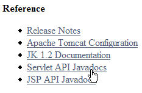
3.6.5. Testing the servlet
We are ready to run a test. Start the Tomcat server if necessary.

Then, using a browser, request the URL [http://localhost:8080/personne/formulaire]. Here, we are requesting the URL [/form] from the context [/person]. The [web.xml] file for this context specifies that the URL [/form] is handled by the servlet named [formperson]. In the same file, it is specified that this servlet is the class [istia.st.servlets.ServletFormulaire]. Tomcat will therefore entrust this class with processing the client request. If the class was not already loaded, it will be loaded. It will then remain in memory for future requests.
We get the following result using Eclipse’s built-in browser:

We get the default values for name and age, those specified in the [web.xml] file. Now let’s request the URL [http://localhost:8080/personne/formulaire?txtNom=tintin&txtAge=30]:
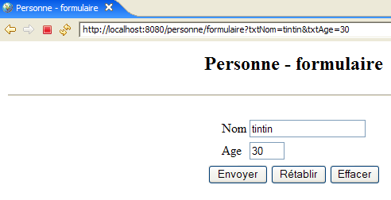
This time, we get the parameters passed in the request. The reader is invited to review the code of the [ServletFormulaire] servlet if they do not understand these two results.
3.6.6. Automatic reloading of the web application context
Let’s start Tomcat:

then modify the servlet code as follows:
- Line 8 has been modified
Let’s save the new class. This save will trigger an automatic recompilation of the [ServletFormulaire] class by Eclipse, which Tomcat will detect. It will then reload the [personne] web application context to reflect the changes. This appears in the logs of the [console] view:

Let’s request the URL [http://localhost:8080/personne/formulaire] without restarting Tomcat:
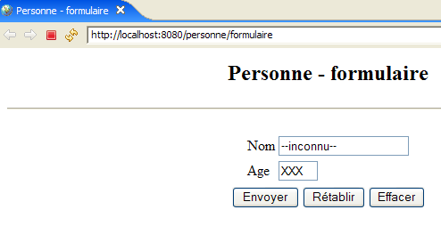
The change has been successfully applied.
Now, let’s modify the [web.xml] file as follows:
<?xml version="1.0" encoding="UTF-8"?>
<web-app id="WebApp_ID" version="2.4"
xmlns="http://java.sun.com/xml/ns/j2ee"
xmlns:xsi="http://www.w3.org/2001/XMLSchema-instance"
xsi:schemaLocation="http://java.sun.com/xml/ns/j2ee http://java.sun.com/xml/ns/j2ee/web-app_2_4.xsd">
<display-name>person</display-name>
<servlet>
<servlet-name>person-form</servlet-name>
...
<init-param>
<param-name>defaultName</param-name>
<param-value>UNKNOWN</param-value>
</init-param>
...
</servlet>
...
</web-app>
- Line 12 has been modified
Now that this is done, let’s save the new [web.xml] file. In the [console] view, no log indicates that the application context has been reloaded. Let’s request the URL [http://localhost:8080/personne/formulaire] without restarting Tomcat:
The change was not applied. Let’s restart Tomcat [right-click on the server -> Restart -> Start]:
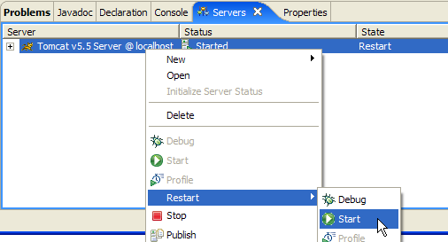
then request the URL [http://localhost:8080/personne/formulaire] again:

This time, the change made in [web.xml] is visible.
A change to [web.xml] therefore does not trigger an automatic reload of the application that would incorporate the new configuration file. To force the web application to reload, you can restart Tomcat as we did, but this is a rather slow process. It is preferable to use the [manager] tool for administering applications deployed in Tomcat. For this to work, Tomcat must have been configured within Eclipse as shown in Section 2.5.
First, using Eclipse’s internal browser, enter the URL [http://localhost:8080] and then follow the [Tomcat Manager] link, as explained at the end of Section 2.5:

Let's open a second browser [right-click on the browser -> New Editor]:
 |  |
In this second browser, enter the URL [http://localhost:8080/formulaire]:

Modify the [web.xml] file as follows, then save it:
<!-- ServletForm -->
<servlet>
<servlet-name>personform</servlet-name>
<servlet-class>
istia.st.servlets.personne.ServletForm
</servlet-class>
<init-param>
<param-name>defaultName</param-name>
<param-value>YYY</param-value>
</init-param>
<init-param>
<param-name>defaultAge</param-name>
<param-value>XXX</param-value>
</init-param>
</servlet>
Then request the URL [http://localhost:8080/formulaire] again. We can see that the change has not been applied. Now, go to the first browser and reload the [person] application:

Then request the URL [http://localhost:8080/formulaire] again using the second browser:

The change to [web.xml] has been applied. In practice, it is useful to have a browser open on the Tomcat [manager] application to handle this type of situation.
3.7. Servlet and JSP Page Interaction
Readings [ref1]: Chapter 2: 2.3.7
Let’s return to the two architectures we examined:

Neither of these two architectures is satisfactory. They both have the drawback of mixing two technologies: Java programming, which handles the logic of the web application, and HTML coding, which handles the presentation of information in a browser.
- The JSP-based solution [1] has the drawback of mixing HTML code and Java code within the same page. We didn’t see this in the example we covered, which was basic. But if [formulaire.jsp] had to validate the [txtNom, txtAge] parameters in the client’s request, we would have had to put Java code in the page. This quickly becomes unmanageable.
- Solution [2], based on a servlet, presents the same problem. Although there is only Java code in the class, it must generate an HTML document. Again, unless the HTML document is basic, its generation becomes complicated and nearly impossible to maintain.
We will avoid mixing Java and HTML technologies by adopting the following architecture:

- The user sends their request to the servlet. The servlet processes it and constructs the values for the dynamic parameters of the JSP page [form.jsp], which will be used to generate the HTML response for the client. These values form what is known as the JSP page template.
- Once its work is complete, the servlet will ask the JSP page [form.jsp] to generate the HTML response for the client. At the same time, it will provide the JSP page with the elements it needs to generate this response—the elements that make up the page model.
We will now explore this new architecture.
3.7.1. The [ServletFormulaire2] servlet
In the architecture above, the servlet will be named [ServletFormulaire2]. It will be built in the same [personne] project as before, along with all future servlets:

[ServletFormulaire2] is first created by copying and pasting [ServletFormulaire] within Eclipse:
- select [ServletFormulaire.java] -> right-click -> Copy
- Select [istia.st.servlets.personne] -> right-click -> Paste -> rename to [ServletFormulaire2.java]
Then, we modify the code of [ServletFormulaire2] as follows:
Only the part generating the HTTP response has changed (lines 44–46):
- Line 46: The JSP page `formulaire2.jsp` is responsible for generating the response. This page, which we haven't covered yet, will display the parameters retrieved from the client's request: a name (lines 35–38) and an age (lines 39–42).
- These two values are placed in the request attributes, associated with keys. Request attributes are managed as a dictionary.
- Line 44: The name is placed in the request associated with the key "name"
- Line 45: The age is placed in the request associated with the key "age"
- Line 46: Requests the display of the JSP page [formulaire2.jsp]. The following is passed as a parameter to it:
- the client's request, which allows the JSP page to access its attributes that have just been initialized by the servlet
- the response [response], which will allow the JSP page to generate the HTTP response to the client
Once the [ServletFormulaire2] class has been written, its compiled code appears in [build/classes]:

3.7.2. The JSP page [formulaire2.jsp]
The JSP page formulaire2.jsp is created by copying and pasting the [formulaire.jsp] page

and then modified as follows:
<%@ page language="java" contentType="text/html; charset=ISO-8859-1"
pageEncoding="ISO-8859-1"%>
<!DOCTYPE HTML PUBLIC "-//W3C//DTD HTML 4.01 Transitional//EN">
<%
// retrieve the values needed for display
String name = (String) request.getAttribute("name");
String age = (String) request.getAttribute("age");
%>
<html>
<head>
<meta http-equiv="Content-Type" content="text/html; charset=ISO-8859-1">
<title>Person - form2</title>
</head>
<body>
<center>
<h2>Person - form2</h2>
<hr>
<form action="" method="post">
<table>
<tr>
<td>Name</td>
<td><input name="txtName" value="<%= name %>" type="text" size="20"></td>
</tr>
<tr>
<td>Age</td>
<td><input name="txtAge" value="<%= age %>" type="text" size="3"></td>
</tr>
</table>
<table>
<tr>
<td><input type="submit" value="Submit"></td>
<td><input type="reset" value="Reset"></td>
<td><input type="button" value="Clear"></td>
</tr>
</table>
</form>
</center>
</body>
</html>
Only lines 4–8 have changed compared to [formulaire.jsp]:
- line 6: retrieves the value of the attribute named "name" in the [request], an attribute created by the [ServletFormulaire2] servlet.
- line 7: does the same for the "age" attribute
3.7.3. Application Configuration
The configuration file [web.xml] is modified as follows:
<?xml version="1.0" encoding="UTF-8"?>
<web-app id="WebApp_ID" version="2.4"
xmlns="http://java.sun.com/xml/ns/j2ee"
xmlns:xsi="http://www.w3.org/2001/XMLSchema-instance"
xsi:schemaLocation="http://java.sun.com/xml/ns/j2ee http://java.sun.com/xml/ns/j2ee/web-app_2_4.xsd">
<display-name>person</display-name>
<!-- Form Servlet -->
<servlet>
<servlet-name>personform</servlet-name>
<servlet-class>
istia.st.servlets.person.ServletForm
</servlet-class>
<init-param>
<param-name>defaultName</param-name>
<param-value>unknown</param-value>
</init-param>
<init-param>
<param-name>defaultAge</param-name>
<param-value>XXXX</param-value>
</init-param>
</servlet>
<!-- Form Servlet 2-->
<servlet>
<servlet-name>personform2</servlet-name>
<servlet-class>
istia.st.servlets.personne.ServletForm2
</servlet-class>
<init-param>
<param-name>defaultName</param-name>
<param-value>unknown</param-value>
</init-param>
<init-param>
<param-name>defaultAge</param-name>
<param-value>XXX</param-value>
</init-param>
</servlet>
<!-- ServletForm Mapping -->
<servlet-mapping>
<servlet-name>personform</servlet-name>
<url-pattern>/form</url-pattern>
</servlet-mapping>
<!-- ServletFormulaire 2 Mapping -->
<servlet-mapping>
<servlet-name>personform2</servlet-name>
<url-pattern>/form2</url-pattern>
</servlet-mapping>
<!-- welcome files -->
<welcome-file-list>
<welcome-file>index.html</welcome-file>
</welcome-file-list>
</web-app>
We kept the existing code and added:
- Lines 22–36: a <servlet> section to define the new ServletFormulaire2 servlet
- Lines 42–46: a <servlet-mapping> section to associate the URL /formulaire2 with it
Start or restart the Tomcat server if necessary. We request the URL
http://localhost:8080/personne/formulaire2?txtNom=milou&txtAge=10:

We get the same result as before, but the structure of our application is now clearer: a servlet that contains application logic and delegates the task of sending the response to the client to a JSP page. We will always proceed this way from now on.